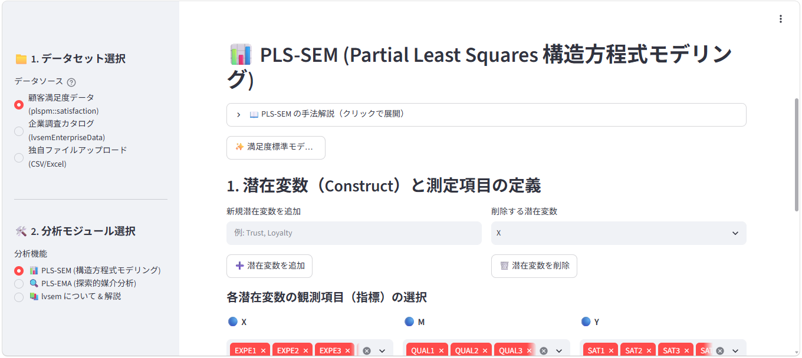
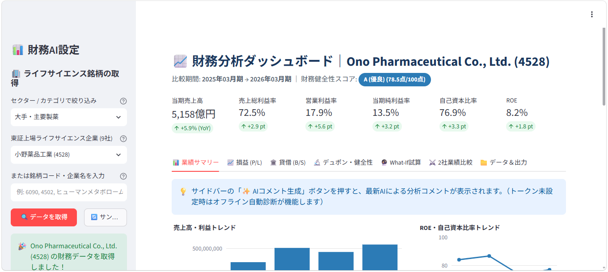
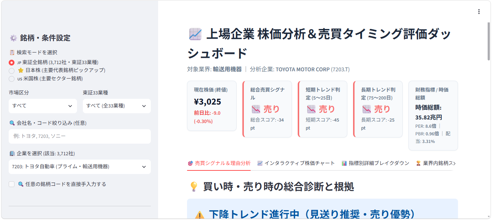
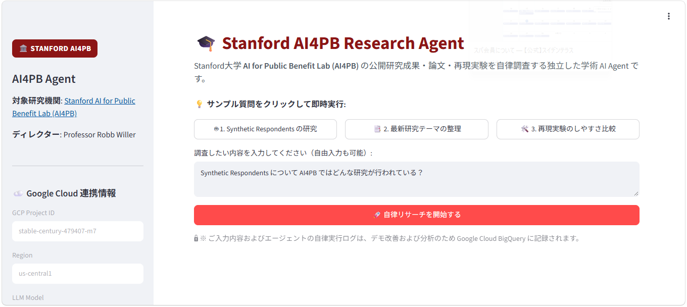

ビジネス・社会科学のデータサイエンス / メタボロミクスのためのインフォマティクス / AIアプリ開発記録(生命科学) /
AIを使ったWebアプリの開発と、社会科学・ビジネス分野のデータ分析手法の研究・実装に取り組んでいます。
企業分析、研究調査、社会科学データ分析のためのアプリ、Rパッケージ、デモ解析、講義資料を公開しています。

PLS-SEMとPLS-EMAをブラウザ上で実行できる分析アプリ。
顧客満足度データ、企業調査データ、CSV・Excelファイルを読み込み、潜在変数と観測項目を設定してモデルの推定・評価・可視化を行えます。手法解説とサンプルモデルも用意しています。

企業の財務データを取得し、収益性・安全性・資本効率を多面的に分析するダッシュボード。
銘柄コードや企業名から財務情報を取得し、業績推移、損益計算書、貸借対照表、デュポン分析、健全性診断、経営What-ifシミュレーションを一画面で確認できます。AIによる分析コメントの生成にも対応しています。

株価トレンドと財務指標を組み合わせ、売買タイミングとその根拠を整理する分析ダッシュボード。
日本株・米国株から対象企業を選び、現在株価、短期・長期トレンド、企業価値指標を確認できます。総合シグナル、インタラクティブチャート、指標別の内訳、業界内比較から判断材料をまとめて表示します。

公開研究成果・論文を対象に、研究テーマの整理や再現実験のしやすさを自律調査する研究エージェント。
Stanford AI for Public Benefit Lab（AI4PB）の公開情報を対象に、論文検索、本文取得、情報ギャップ評価、再現実験ガイドの作成を支援します。Google Cloud上で動作し、調査プロセスを段階的に実行します。